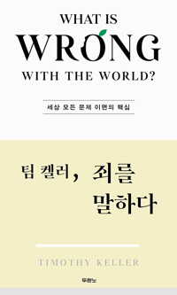

『죄를 말하다』를 마무리하는 날, 모임은 한 참석자의 무거운 고백으로 문을 열었다. 죄를 깊이 들여다볼수록 자신의 죄인 됨이 선명해지는데 회개 기도를 해도 평안이 오지 않더라는 것이다. 진행자는 죄 묵상의 끝은 죄가 아니라 예수님이어야 한다는 데서 출발해, 영화 「밀양」과 다윗 이야기로 회개의 진짜 모양과 죄가 남기는 대가의 문제를 파고들었다. 선택 과잉의 시대, 갈등을 선용하는 공동체, 사람마다 다른 죄의 민감도까지 화제가 넓게 번져 간 끝에, 우리는 아직 멀었지만 그래서 오히려 다행이라는 역설로 책을 덮었다. 다음 책으로는 분위기를 바꿔 소설 『스토너』가 정해졌다.
회개 기도에 평안이 없을 때 — 죄가 아니라 예수님을 보라
첫 화제는 한 참석자의 고백에서 나왔다. 이 책을 읽으며 죄를 어느 때보다 깊이 생각하게 됐는데, 그러다 보니 자신이 하나님을 수단처럼 대해 온 것은 아닌지까지 파고들게 됐고, 정작 회개 기도를 드려도 마음이 풀리지 않더라는 것이다. 회개하면 평안이 와야 하는데 여전히 죄 가운데 있는 것 같아 이게 진짜 회개인지 모르겠다는 물음이었다.
진행자는 온갖 영양제 정보에 파묻히기보다 좋은 주치의 한 사람을 만나는 게 낫다는 비유로 답했다. 이어서 그는 죄론은 몰라도 기도의 자리에서 하나님을 경험하며 울던 옛 어른 세대와, 지식은 넘치는데 불안은 더 깊어진 지금 세대를 견주며, 지식으로 아는 것과 경험으로 아는 것이 어우러져야 한다고 했다. 수영을 배울 때 처음엔 팔과 다리와 시선을 다 따로 신경 쓰지만 어느 순간 아무것도 신경 쓰지 않고 물 위를 나아가게 되듯, 그 감각이 자랄 때까지의 시간이 곧 성화라는 비유가 여운을 남겼다.
밀양과 다윗 — '하나님 배지'를 단 이기적 회개
다윗이 밧세바 사건 후에 사람이 아니라 하나님께 죄를 지었다고 고백하는 대목에서, 한 참석자가 영화 「밀양」이 떠오른다고 했다. 피해자가 힘겹게 용서하러 찾아갔는데 가해자는 이미 하나님께 용서받아 평안하다고 말하는 그 장면이다. 저 범죄자가 과연 다윗 같은 회개를 한 것이냐는 물음에, 진행자는 그것을 '이기적인 기독교'라 불렀다.
그리고 그 극단적 사례의 잔잔한 판본이 교회 안에 흔하다고 했다. 기도하다 응답받았다며 화해의 손을 내밀고는, 아직 풀리지 않은 상대를 나쁜 사람으로 만들어 버리는 경우다. 진행자는 갈등을 중재하러 들어가면 오히려 하나님 이야기를 그만하라고 말한다고 했다. 하나님이라는 배지를 다는 순간 거기에 호응하지 않는 나머지가 전부 악역이 되기 때문이다. 입을 다물고 상대가 풀릴 때까지 기다리는 것, 그것이 진짜 사과와 화해의 자리라는 이야기에 다들 고개를 끄덕였다.
죄 사함 이후에도 남는 대가 — 흑백의 구원, 회색의 삶
그렇다면 다윗은 어떻게 됐는가. 진행자는 다윗이 용서받았음에도 왕으로서의 인생은 그 사건으로 사실상 끝났다고 잘라 말했다. 첫 아이를 살려 달라 부르짖다가 아이가 죽자 일어나 몸을 씻고 음식을 먹은 모습은, 하나님이 결정하셨다면 그것이 옳다는 최종 신뢰의 표현이었다는 해석이 이어졌고, 평생 우울증을 앓았던 찬송가 시인 윌리엄 쿠퍼의 '땅 위에 있으나 묻혀서 살아가는 존재'라는 표현이 다윗의 남은 생을 요약했다.
여기서 한 참석자가 물었다. 예수님이 대가를 다 치르셨는데 왜 우리는 여전히 죄의 대가로 힘들어지는가. 진행자의 답은 명료했다. 구원은 불가항력적 은혜로 받았지만 남겨진 삶에서 죄의 대가는 치른다는 것, 다만 그 모든 마이너스까지 하나님이 결국 합력하여 갚아 주신다는 것이다. 오히려 그렇기에 그리스도인만이 죄를 고백하고 대가를 치를 수 있다고 했다. 세상은 고백하는 순간 매장되기에 끝까지 숨기지만, 우리는 고백으로 말년이 어그러져도 영혼의 회복을 믿기 때문이다. 다만 배우자가 진 빚을 어디까지 함께 짊어져야 하느냐 같은 물음 앞에서는, 구원과 멸망은 흑백이어도 남겨진 삶은 회색이라 쉽게 답할 수 없다는 말이 덧붙었다.

선택 과잉의 시대, 갈등을 선용하는 공동체
이야기는 시대 진단으로 번졌다. 어른이 정해 주는 대로 혼인하던 시절을 지나, 아이스크림 가게 앞에서조차 잘못 고를까 두려워하는 오늘의 풍경까지. 진행자는 선택지가 늘어난 만큼 사람들은 더 불안해지고, 정작 선택의 책임은 아무도 지지 않으려 한다고 짚었다. 그래서 자신은 공동체 일에서 선택권을 잘 주지 않고 대신 결정의 후폭풍을 리더가 감당한다고 했다. 선교 갈 때 기내식 메뉴조차 일괄로 정하자고 했다는 일화에 웃음이 터졌다.
그 연장선에서 갈등 이야기가 나왔다. 갈등 없이 잘 되는 것을 미덕으로 여기는 교회 문화를 향해, 진행자는 갈등 자체가 나쁜 게 아니라고 거듭 말했다. 우승 트로피를 들어 본 감독이 그 감각을 알듯, 공동체가 함께 갈아 넣어 하나님이 그려 주신 그림을 맛보는 순간 모든 수고가 용서된다는 것이다. 사랑받는 사역만 하다 떠나면 공동체는 그대로라는 뼈아픈 지적도 함께 놓였다. 한 참석자도 어느 조직에서든 변화의 속도를 못 견뎌 지치고 떨어져 나가는 사람들을 지켜본 경험을 보태며, 견디고 통과한 사람만 맛보는 것이 있더라고 응답했다.
화재 경보기의 민감도 — 사람마다, 동네마다 다른 죄의 감각
책의 화재 경보기 비유도 긴 나눔을 낳았다. 불이 몸에 붙어야 겨우 울리는 경보기가 있고 작은 연기에도 울리는 경보기가 있듯 죄에 대한 민감도는 사람마다 다르다. 한 참석자는 믿기 전에는 죄인 줄도 모른 채 과거의 실패에 발목 잡혀 살았는데, 하나님을 만나 자유해진 뒤로는 오히려 감사가 커서 죄에 덜 민감해진 것은 아닌지 궁금하다고 했다.
진행자는 논의를 공동체 차원으로 끌어올렸다. 직업군마다, 동네마다 성행하는 죄가 다르며 그것을 분별하는 일은 모든 성도의 몫이라는 것이다. 우리는 온도를 표시하는 온도계가 아니라 온도를 바꾸는 온도조절기로 부름받았다는 말과 함께 팔복의 재해석이 이어졌다. 인생이 힘들어서 심령이 가난한 것은 팔복이 아니고, 천국을 맛보고 그것을 이 땅에 펼쳐 내려다 애가 타는 가난함이 복이라는 것이다. 예수님은 그 상태를 고치라 하지 않으시고 오히려 복되다 선언하셨다는 대목에서, 세상이 말하는 복과 주님이 기뻐하시는 상태 사이에서 무엇을 택할 것인지가 질문으로 남았다.
아직 멀었다는 것이 다행이다 — 그리고 다음 책 『스토너』
마지막 나눔은 회개의 끝, 곧 자기 죄를 미워하는 자리까지 가는 길에 대한 것이었다. 참석자들이 저마다 자신이 그 어디쯤인지 가늠하자, 진행자는 우리 모두 아직 한참 멀었다고, 그런데 그것이 오히려 다행이라고 했다. C. S. 루이스를 빌려, 작아 보이는 죄가 영원히 자란다면 끔찍하지만 우리 안의 생명의 씨앗과 빛도 영원히 자라 하나님의 형상으로 회복된다는 것이다. 새 창조에서는 사람을 먼저 새롭게 하시고 세상을 맡기신다는 이야기, 그래서 한 영혼이 천하보다 귀하다는 이야기가 이어졌다.
『죄를 말하다』는 이렇게 끝났다. 다음 책을 고르는 자리에서 한 참석자가 소설 『스토너』를 추천했고, 늘 교리와 신앙 서적만 읽어 온 모임에 소설은 없던 근육을 키우는 필라테스 같을 거라는 진행자의 말과 함께 채택됐다. 죄조차 주님을 더 사랑하게 만드는 통로가 되게 해 달라는 기도로 모임을 마쳤다.